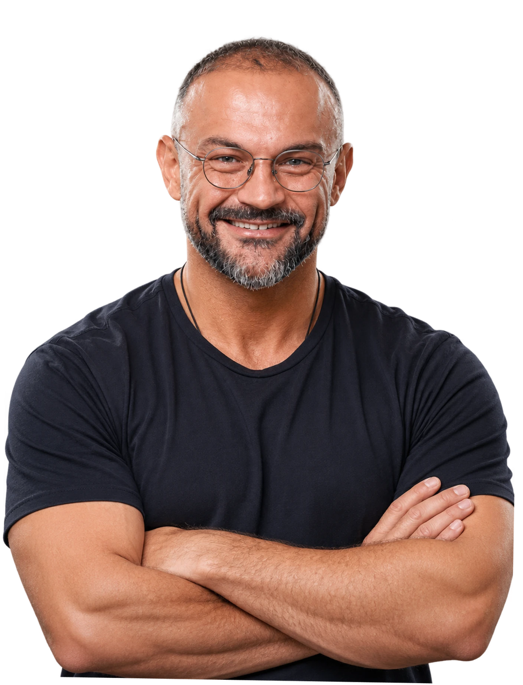

Justin Maguire
Nutritional scientist and health coach
“Rather than asking what diagnosis a person has, I focus on understanding the underlying physiological systems influencing their health.”
- BSc (Hons) Nutritional Science
- Postgraduate Diploma, Functional Blood Chemistry Analysis
- MSc in Neuroscience and Psychology of Mental Health (in progress)
- Author of Responsive Living
Justin Maguire is a nutritional scientist and one-to-one health coach. He reads lab results, daily tracking and a client’s psychology together to find the patterns that each one misses when it’s looked at alone.

How I Look at Health
I work from the premise that wellbeing is more than a single lab value or a diagnosis label. What matters to me is how three systems interact within a person’s life: the nervous system, the immune system and the hormonal system.
The field I draw on is called psychoneuroimmunoendocrinology, the study of how the mind, nervous system, immune system and hormones communicate with each other. I combine it with biochemistry, nutritional science, functional blood chemistry and neuroscience, so that your fatigue or brain fog is read against how those systems interact, not against a single result.
In practice, I work through four questions with each client.

Psychoneuroimmunoendocrinology
How I work with clients
- 01
What are your symptoms?
You tell me what you’re experiencing in your own words, whether it’s a long-running concern or a recent drop in physical performance, mental clarity or energy.
- 02
Which patterns sit behind them?
I look for where those symptoms connect across your nervous, immune, hormonal, and metabolic systems.
- 03
What is driving those patterns?
I work out what is keeping them going.
- 04
What plan follows?
I turn that into practical, personalized steps that fit a busy schedule.
My Qualifications & Training
This approach rests on formal training, and I’m still studying. I check research critically so I can explain it clearly and apply it to the person in front of me.
Qualifications show what I’ve studied. These people have seen how I apply it.
What others say about my work
“His ability to translate complex immunological and biochemical science into practical solutions is nothing short of extraordinary.”
“His perspective comes from thousands of hours working with hundreds of the world’s most optimised humans, including myself.”
“...has earned him the reputation of a true blood detective.”
My work is also in the public record:

Why I do this work
I want wellness to be more proactive and more personal. My aim is to give people the education, insight, and support to take more ownership of their health: to reduce confusion and restore confidence. I’m also building Autonomic Wellness, so that people who can’t take on coaching right now have a way to start.
Justin Maguire
Who I work with
I work one-to-one with high-performing people: executives, founders and senior professionals whose energy, focus or resilience under pressure has dropped, and whose standard tests don’t explain why. I also work with people whose health concerns are complex and haven’t had a clear answer.
Coaching runs week by week and asks for time, money and emotional energy, so it suits people who are ready to give all three.
Everything you share stays private.
Request coaching with me
Coaching is by application, so every client starts with a short form.
Request Coaching- You fill in a short form: your name, email, main health concern, what you’ve tried and your goals.
- Your request is reviewed before any call is booked.
- If coaching looks right for you, we invite you to a call.
Looking for testing or a licensed doctor’s review? That’s Autonomic Wellness.
Visit Autonomic WellnessNot ready to apply? My book explains the thinking behind the coaching.
Read the first chapter of Responsive Living free